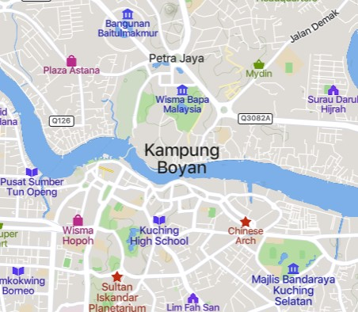

Origins
Kampung Boyan traces its roots back to the early 19th century when it was founded by Bugis settlers from Sulawesi, Indonesia. These pioneers brought their distinct culture and maritime trade skills, shaping the village's identity and development.
Location
Kampung Boyan is a picturesque village located on the northern bank of the Sarawak River, directly across from the vibrant city of Kuching, the capital of Sarawak, Malaysia. Situated within the Kuching Waterfront area, Kampung Boyan is nestled between Kampung Surabaya and Kampung Gersik. Its riverfront location has historically made it integral to Kuching's social and economic fabric, offering stunning river views and easy access to the city center.
MAPS OF KAMPUNG BOYAN
Naming Of The Village
The name "Kampung Boyan" is believed to have evolved from "Bawean," an island in Indonesia from where some of the early settlers originated. Over time, the name was adapted to its current form, reflecting the village's historical roots and cultural heritage. The term "Boyan" honors the legacy of the Bugis settlers and their enduring influence on the village’s cultural landscape.
Historical Events
Early Settlement and Trade: In the 19th century, Kampung Boyan emerged as a bustling trading hub due to its strategic location along the Sarawak River. The Bugis settlers, known for their seafaring and trading skills, established the village as a center for commerce. Goods such as spices, textiles, and handcrafted items were traded, contributing to the village’s prosperity and growth.
Cultural Exchange and Influence: The village became a melting pot of cultures as it attracted traders and settlers from various regions, including the Malay Peninsula, China, and India. This cultural exchange enriched the village’s heritage, leading to a unique blend of traditions, languages, and customs that are still evident today.